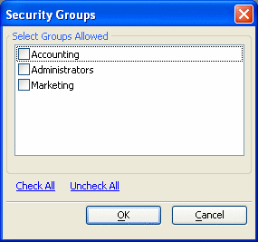

Select Groups Dialog
The Security Groups dialog allows you to select groups assigned to objects and pages.

To select a group, click the checkbox .
You can select Check All or Uncheck All, to select or unselect all groups listed.
Limitations
Web publishing applications only.
See Also